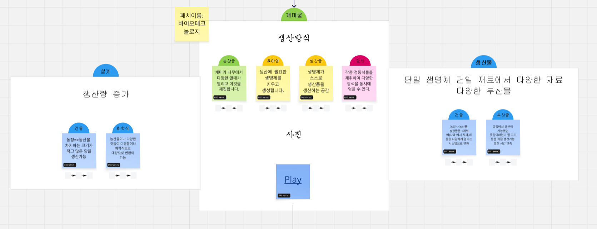
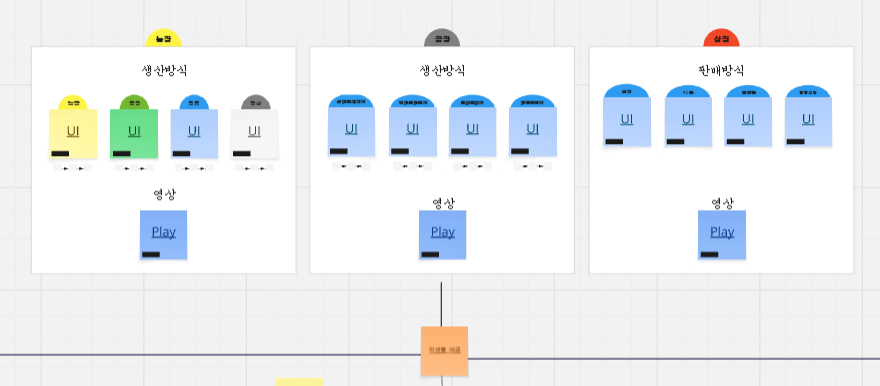
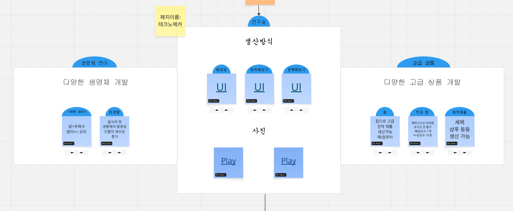
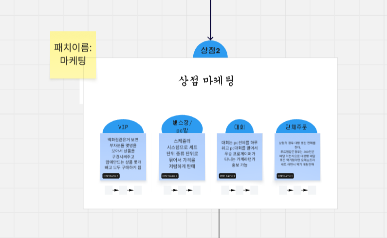
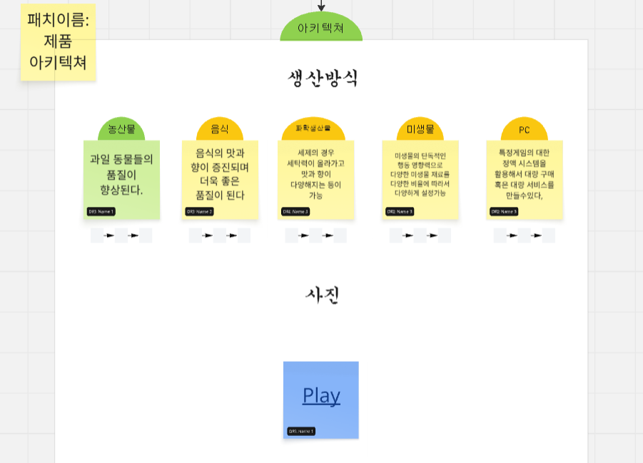
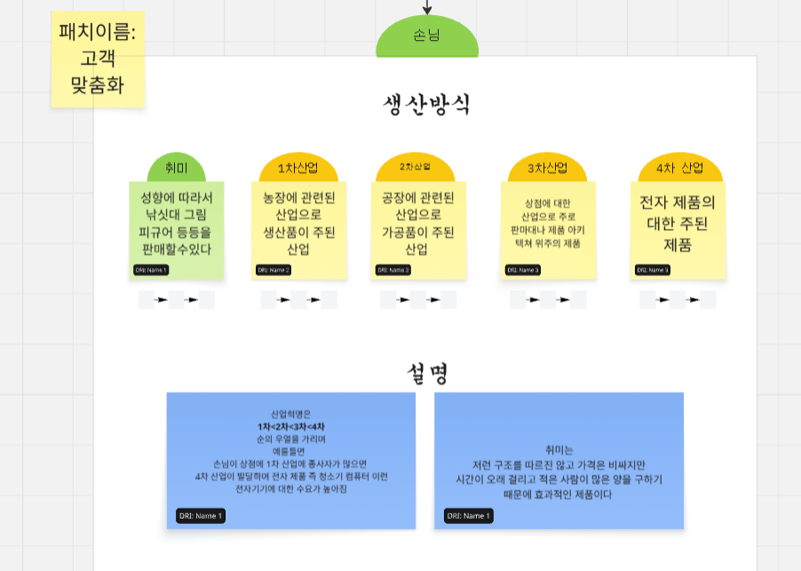
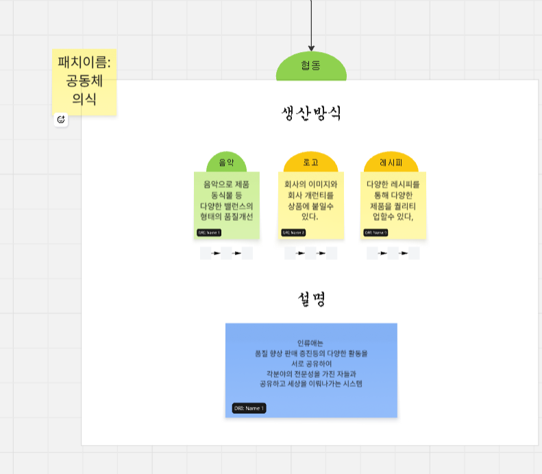

개미굴

생명체 단위 생산과 부산물 확장을 다루는 패치입니다.
Production Method

| 구역 | 생산/판매 방식 | 보조 콘텐츠 |
|---|---|---|
| 농장 | 생산방식 | 영상 |
| 공장 | 생산방식 | 영상 |
| 상점 | 판매방식 | 영상 |

생명체 단위 생산과 부산물 확장을 다루는 패치입니다.

생명체 변이와 고급 상품 개발을 다룹니다.

VIP, 세트 판매, 대회, 단체주문처럼 판매 방식을 확장합니다.

농산물, 음식, 화학상품, 미생물, PC 품질과 시스템을 향상합니다.

손님의 취미와 산업군에 맞춰 상품을 제공합니다.

음악, 로고, 레시피를 통해 전문성을 공유하고 품질을 높입니다.